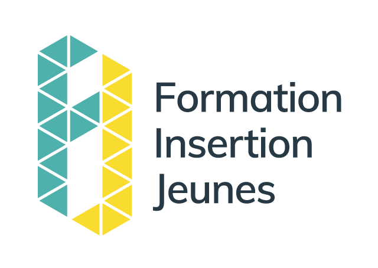
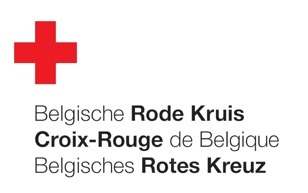
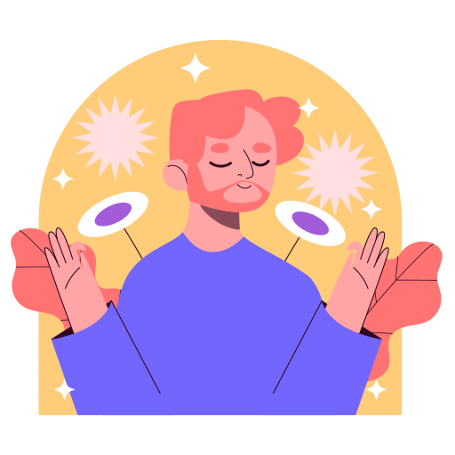
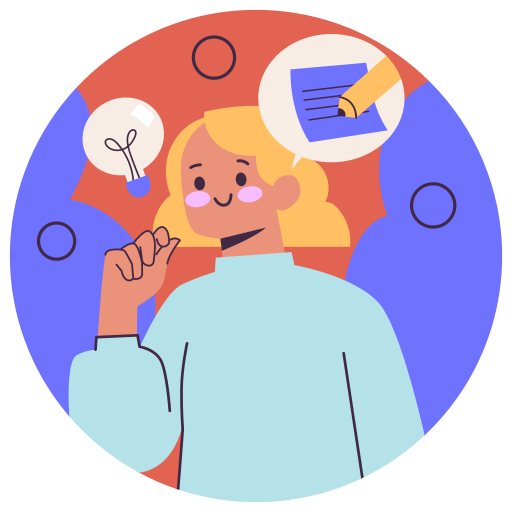

CV
Experiences
- Connectis Group
- Avril 2024 - Mai 2024
- Stage de finalisation (formation FIJ)
Formations

- FIJ – Formation Insertion Jeunes
- Septembre 2023 – Juillet 2024
- Formation technicien informatique certifiée
Compétences acquises
- Assembler / Configurer un ordinateur
- Gérer les pannes
- Assurer l’aide à l’utilisateur
- Maintenir le bon fonctionnement d’un réseau
- Logiciels de bureautique
- Mission Locale pour l'Emploi de Saint-Gilles
- Mars 2023
- Détermination ciblé TIC
Sujets parcourus
Découverte des métiers de l’informatique (développeur, programmeur, responsable technique de réseau, responsable de maintenance, web designer, graphiste, informaticien, etc). Ateliers pratiques, témoignages de professionnels du secteur et visites de centres de formation, construction et planification d’un plan d’action

- Croix-rouge de Belgique | Uccle
- Avril 2022
- Brevet Européen des premiers secours – BEPS
Langues
Français
Langue Maternelle
Langue Maternelle
Anglais
intermédiaire (B1)
intermédiaire (B1)
Néerlandais
élémentaire (A2)
élémentaire (A2)
Qualités

Concentration / Patiente
Capacité à rester calme jusqu'à la réalisation complète d'une tâche, sans se précipiter, ni brûler les étapes.

Gestion du stress
Capacité à garder son calme et son niveau d'attention même dans des situations challengeantes.

Logique
Capacité à suivre ou à élaborer un raisonnement.
Centres d'intérêts
Les échecs
- Adaptabilité
- Concentration / patience
- Esprit de synthèse
- Capacité d'apprentissage
- Logique
- Sens de la négociation / Stratégie
- Résolution de problèmes complexes
- Rigueur
- Capacité à prendre des décisions

Les jeux vidéos
- Adaptabilité
- Attention aux détails / méticulosité
- Concentration / patience
- Créativité
- Curiosité
- Esprit d'équipe
- Gestion du stress / Capacité à travailler sous pression
- Capacité d'apprentissage
- Logique
- Persévérance / Dépassement de soi